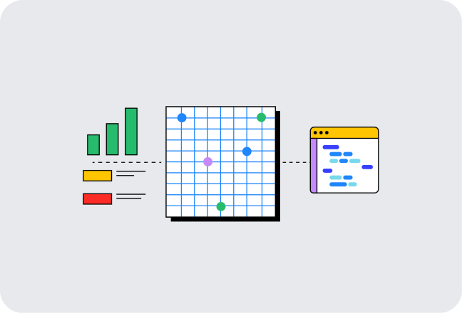
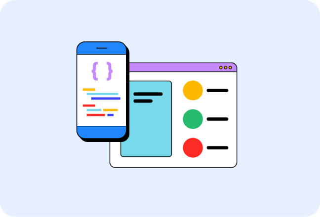
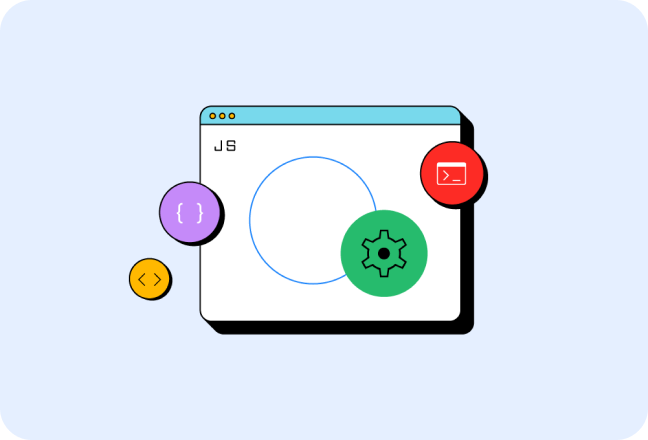

AI and the web
Discover resources created to help you understand and build performant, web-first experiences with AI.
Learn moreGuidance to build modern web experiences that work on any browser.
We want to help you build beautiful, accessible, fast, and secure websites that work cross-browser, and for all of your users. This site is our home for content to help you on that journey, written by members of the Chrome team, and external experts who specialize in web development topics such as accessibility, performance, design, and more.


Discover resources created to help you understand and build performant, web-first experiences with AI.
Learn moreInteraction to Next Paint (INP) is now a Core Web Vital metric. Start measuring and optimizing your site's INP.
Learn more
Read up on the latest features and best practices when it comes to identity and payment processing.
Learn moreFind information about the features and technologies that make up the web platform.
Learn how to structure content for the web with HTML.
Discover the styling tools that help you create beautiful web experiences.
Explore the language that brings interactivity to your websites.
Start learning about the core technologies that power the web.

A course to help you learn HTML, the language used to describe the structure of a web page.

Learn how to style web content and build responsive layouts with CSS.

Get started with JavaScript and learn how to add behavior to your web pages.